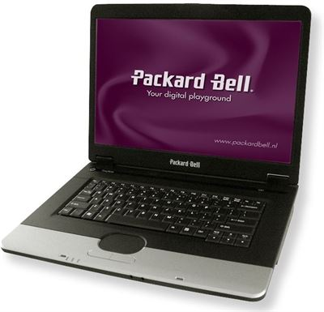

Review of the Packard Bell Easynote Argo C
Background
Around the year 2005, my parents decided to throw out the old Fujitsu-Siemens PC running Windows XP and replace it with a more modern laptop (the one in this review). Some years later, when it was becoming slower and Windows 7 had rolled out about a year ago, we bought yet another new laptop. As a result of this, the old computer was handed over to me to play around with. However, As my computer knowledge was very minimal at that age, I did not use it all that much. As of today, it must be the computer i have used the most throughout the years. Sadly, because of its old age, is has become difficult to use it as a daily driver, so in recent years I have tried out many different operating systems and configurations on it to try bringing it back to life. Unfortunately, it did not make a very noticable difference, so I switched back to Windows Vista. So from now on, I will keep it as original as possible for nostalgic reasons.
Specifications
In 2005, laptops were in many ways inferior in performance to their desktop counterparts. As such the following specs will not seem impressive to anyone...
- Processor: 1xIntel Celeron m 520 @1.6GHz
- RAM: 2GB DDR2 SO-DIMM (Upgraded)
- Graphics processor (Yes it had one!): ATI RADEON XPRESS 200M Series
- Screen: 15.4" 1280x800 resolution display
- Hard disk: Toshiba 2.5" SATA drive with 298GB of storage.(Upgraded)
It also featured a DVD-ROM drive, 3xUSB 2.0 ports, Headphone and microphone ports, a VGA port, and an Ethernet port aswell as Wi-Fi.
Performance
I tried to run the CPU test in Cinebench 11.5, but it did not want to start, confirming the fact that this computer is not very powerful. However, in the real world you can do basic day-to-day tasks on this machine, if you ignore the web based ones which unfortunately is very hard to do in 2019. That said, I have been browsing the internet with Internet explorer 9 on here, and it is slow. I did actually manage to play YouTube videos in windowed mode, but doing that pushed the cpu to 100% load and it was not really possible to do anything else with the computer in the meantime.
Design and functionality
The design of this laptop is fairly standard for the time period: It is thick and made completely out of plastic, it has rouded edges, a display lock, and comes in the colours black and matte silver. To be completely honest, I like this type of design more than current laptops because of the added functionality when sacrificing thickness and weight. Speaking of weight; Even when carried in a laptop bag, it is heavy. Also, the portability suffers even more now since the battery died long ago, meaning that you have to carry a charger with you att all times. Other than that, I find the machine to be very user friendly with plenty of ports and a solid, clicky keyboard. The trackpad could be a bit larger though, and two-finger scrolling would be a nice feature.